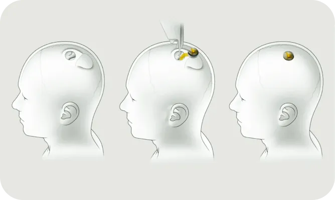

The company aims to develop electronic components that can be integrated into the brain, such as to increase memory or controlled terminals and can also serve to better combine the brain and artificial intelligence, During the presentation Elon Musk’s implant measured a few millimeters in diameter and 8 millimeters in thickness. The small size will allow an easy implantation of the chip, while leaving only a small scar under the scalp.
Neuralink wanted to start operations with human trials in 2020, thanks to the collaboration of Stanford neurosurgeons and other institutions then at the end of August 2020, Neuralink showed a sow named Gertrude living with an implanted chip in his brain that transmits neural signals and to end April 9, 2021, the company d'Elon Musk publish vidéo of monkey playing a pong game by thought but a lawsuit against the company was filed in 2022 against animals due to the death of some monkeys after experiments Musk would also like to offer the possibility of communicating, without being limited by human language;of consensual and conceptual non-linguistic telepathy. His team dreams, among other things, of putting an end to severe pain, of curing depression and addiction , Elon Musk also said that it would be possible to store his memories digitally. “You can save your memories, and also potentially upload them to another body or robot.” in the end he would like to unravel the mysteries of consciousness.
This idea to have computer implant in the brain or seen more widely with a robotic implant somewhere on the body makes me envious the time when these technologies will be widespread. I think that all implanted people you have to rediscover their daily lives and their entire lives because the implant will change them in many ways